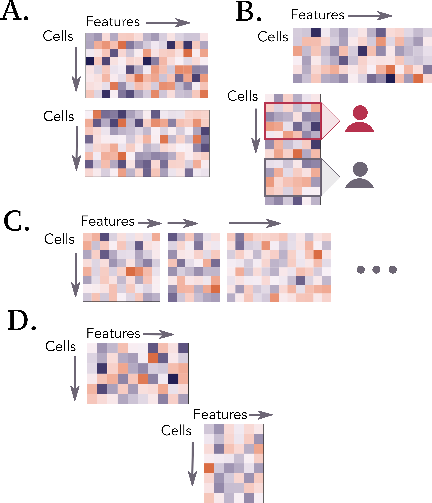
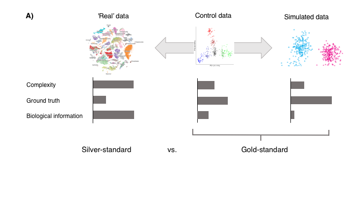
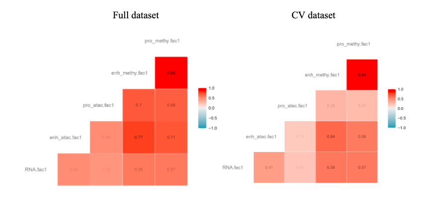
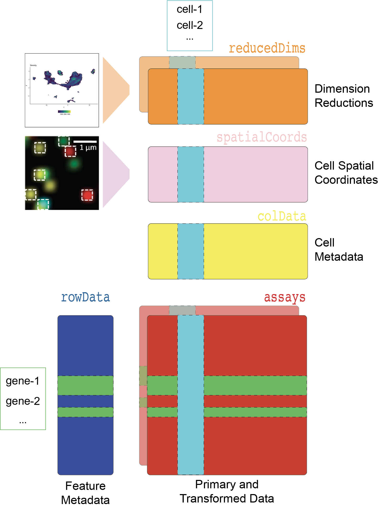
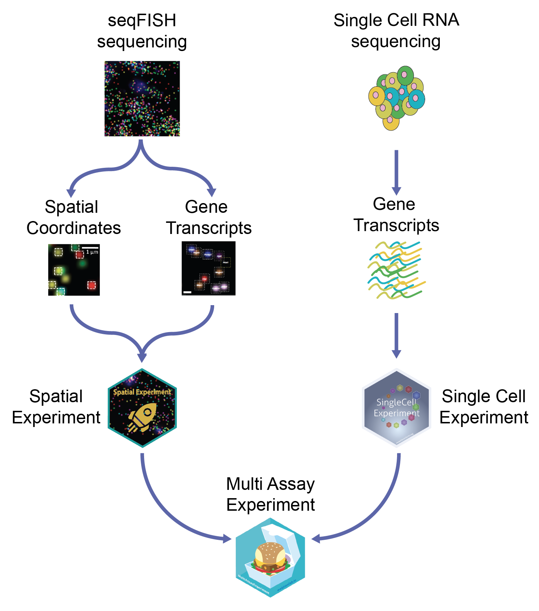

Kim-Anh Lê Cao 0000-0003-3923-1116
· mixOmicsTeam
· mixOmicsTeam
Melbourne Integrative Genomics, School of Mathematics and Statistics, University of Melbourne, Australia
· Funded by Grant National Health and Medical Research Council Career Development fellowship (GNT1159458)
Aedin C Culhane 0000-0002-1395-9734
· aedin
· AedinCulhane
Data Sciences, Dana-Farber Cancer Institute, Boston, MA, USA; Biostatsitics, Harvard TH Chan School of Public Health, Boston, MA, USA
· Funded by Chan Zuckerberg Initative, NIH, DoD (need to get grant IDs)
Elana Fertig 0000-0003-3204-342X
· ejfertig
· FertigLab
Department of Oncology, Sidney Kimmel Comprehensive Cancer Center, Johns Hopkins University School of Medicine, Baltimore, MD, USA; Department of Biomedical Engineering, Johns Hopkins University School of Medicine, Baltimore, MD, USA; Department of Applied Mathematics and Statistics, Johns Hopkins University Whiting School of Engineering, Baltimore, MD, USA
· Funded by National Institute of Health, National Cancer Institute; National Institute of Health, National Institute of Dental and Craniofacial Research; Lustgarten Foundation; Emerson Foundation; Allegheny Health Network
Vincent J. Carey 0000-0003-4046-0063
· vjcitn
Channing Division of Network Medicine, Brigham and Women’s Hospital, Harvard Medical School
· Funded by National Institutes of Health, National Human Genome Research Institute; National Institutes of Health, National Cancer Institute; Chan-Zuckerberg Initiative
Figure caption: Main challenges discussed during our brainstorming sessions from the hackathons
Introduction [Figure 1 outline]
Comprehensive characterization of biological systems with multi-omics
Single cell community has advanced technologies to enable concurrent processing of biological systems at multiple molecular resolutions
The lack of prior knowledge and gold standard benchmark naturally leads to a data-driven approach
New single cell multi omics initiatives:
Human Cell Atlas (HCA): assess variation in normal tissues
Brain initiative and Allen Brain
Human Tumor Atlas Network (HTAN): Single-cell, longitudinal, and clinical outcomes atlases of cancer transitions for diverse tumor types.
What bulk multi-omics (e.g. TCGA, ENCODE) have taught us:
Type of omics that can answer a specific biological question
The value of open resources for methodological developments
New hypotheses
Using hackathons to illustrate analysis standards and challenges for capturing biological information from multi-omics technologies
Brief overview of our three hackathon studies highlighting state of the art challenges (e.g., spatial transcriptomics, cross-study analysis, epigenetic regulation)
Challenges include issues with noise and experimental design, Time lag between regulatory levels not addressed and many open questions
remain (e.g methylation / gene expression), Direction of regulation not captured
We present our findings from hackathon case studies that helped us obtain benchmarks and define a common language for multi-omics
Hackathon case studies
scRNA-seq + seqFISH as a case study for spatial transcriptomics [Figure 2 results]
Overview and biological question
Main challenges and how it was overcome by the participants
Challenge 1: overlay of scRNA-seq onto seqFISH for resolution enhancement
Challenge 2: determine signatures of cellular co-localization or spatial coordinates in non-spatial scRNA-seq
Spatial proteomics and cross-study analysis [Figure 3 results]
Overview and biological question
Main challenges and how it was overcome by the participants
Challenge 1: address the lack of overlap between proteins across studies
Challenge 2: spatial protein expression analysis
scNMT-seq as a case-study for epigenetic regulation [Figure 4 results], lead: Ricard Argelaguet
Overview and biological question
Main challenges and how it was overcome by the participants
Challenge 1: defining genomic features
Challenge 2: DNA methylation imputation
Challenge 3: Linking epigenetic features / chromatin accessibility to gene expression
Analytical approaches for hackathons and commonalities for multi-omics analysis illustrated by the series of hackathons [Figure 5 + Table 1]
Short introduction explaining that we focus here on the common challenges across hackathons
Summary of hackathon study-specific methods
Table describes method, foundation in the context of previous bulk and single cell literature, and technology dependence
Attempts to tweak existing methods and challenges associated in hackathons
List methods that are either technology dependent (e.g. spatial) vs universal and how to choose them
Dependence on pre-processing method and/or variable selection
These steps are key and affect downstream analyses
Normalization / data transformation (seqFish), pre-processing, gene summaries (scNMT-seq) to variable selection (seqFish)
reproducibility difficult / no consensus. e.g. Alexis selected 19 genes whereas Zhu original paper based on 47 genes (difference in methods / processed data)
Hackathon data pre-processed enable better comparisons across methods
No consensus reached as those are emerging data with no ground truth nor established biological results
Approaches for partial overlap of information (cells / features) and how to predict (cell type, dataset) using another data set
Overlap in each study
seqFish: same features but not cells; scProt: same proteins, not cells but similar patients; scNMT-seq: same cells but not features
How it was solved (Table)
Anchoring information across datasets or studies is needed (Figure)
Incorporation of existing biological knowledge
‘From discovery to detection’ (Meuleman + debrief), time is ripe to include more knowledge in our data driven approaches
Challenge: Partial cell overlap (but no features matching) and No overlap were not addressed
Managing differences in scale and size for datasets that do not match cells or features
Hackathons datasets did not match cells or features.
scNMTQ-seq: MOFA limitation when # features vary (and size of datasets).
seqFish: greedy approach to select the best gene subset (Alexis, size); consider batch effect removal method (Amrit, scale)
Consensus on projection based methods, even if pre-processing was applied (Table)
Additional weighting is needed (e.g. Arora, Abadi).
Interpretation challenges [Table 2: Glossary of terms]
Interpretation requires a good understanding of the methods
Glossary needed for communication
Incorporation of contiguous information to facilitate interpretation of analytical results
Biological knowledge and incorporation of information from databases are important, including bridges to data bases (KEGG, Gene Ontology, HCA) to validate through complementary data.
Visualization tools for interpretation and communication
Example: tSNE/ UMAP.
Explaining results to biologists through generative models and simulations
Example: factor analysis.
Issues of over-discretization (premature-summarization) and over-simplification
Example: notion of cell-type is insufficient (rare cell types vs. more “continuous” view on cell types).
Problem with loss of information in the desire to simplify.
Over interpretation / over reliance of graphical outputs
Benchmarking in gold standard datasets [Figure 6, Table 3]
Definition of benchmarking
Goal 1: recovery of known cell types (processing of raw data, quantification, and clustering)
Goal 2: benchmark methods for their ability to discover known relationships between data modalities, e.g. gene regulatory relationships observed between chromatin accessibility and gene expression (relationships are not fully known at the single cell level).
Strategies for benchmarking
Simulation useful for known truth, but difficult to simulate realistic covariance structure across features and across data modalities.
Benchmarking datasets for single cell studies (Table): limited focus on sequencing depth and diversity of cell types derived from a single assay:
ground truth for the intended effect of exposure in a proposed study design.
validation for a data integration task for which a new computational method may be proposed.
Multi-modal assays benchmarking:
Design to address biological question (co-embedding, mapping or correlation, and inferring causal relationships).
Design for either data integration or further downstream analyses (e.g. differential analysis)
Study design should take into account:
Biological and technical variability via replicates, block design, and randomization.
Power analysis for the intended effect or data integration task.
Dependencies between modalities.
Challenge: No universal benchmark data scheme suits every combination of modality, benchmark datasets may be established for commonly used combinations of modalities or technologies, towards specific data integration tasks.
Hackathons
Cross-validation within study can be performed via Hackathons, e.g. cross-validation analysis of the scNMT-seq dataset using MOFA+
Assess if relationships discovered in one dataset present in other datasets, potentially looking across single cell and bulk.
Challenge: how to match dimensions of latent space across folds. (examples: permutation or cross-validation to assess model performance)
Software infrastructure [Figure 7, Table 4]
Key questions
Q1: How should multimodal single cell data be managed for interactive and batch analyses?
Q2: What methods will help software developers create scalable solutions for multimodal single cell analysis?
Q3: How can we ensure that visualization methods that are central to multimodal single cell analysis are usable by researchers with visual impairments?
Data management strategies
Abstract data type with “multiassay experiment”:
each mode = different collection of features on possibly non-overlapping collections of samples;
metadata on features conventionally defined
metadata on samples include all relevant information on experimental conditions.
Data container for a multi assay analysis:
assays from the same cells, or measurements from distinct cells.
Assay slots containing variables or features from multiple modalities (e.g. gene expression units from scRNA-seq and protein units from sc-proteomics), feature may be multidimensional (e.g. spatial coordinates, locations of eQTLs).
Map between the different assays to enable analysis
Scalability strategies
Reducing barriers to interpretable visualizations
Color is a powerful data visualization tool to represent complex and rich scientific data.
Color vision deficiencies affect a substantial portion of the population. Include colorblind friendly visualizations [1] as a default setting in our visualizations
Future directions
What do we need for the future computation of multi omics single cell
Upcoming cell atlases technologies
What is coming?
how they provide contexts for experimental perturbations
How they provide context for novel datasets
Unifying analysis goals for new computational methods
Moving towards spatiotemporal omics and integration with mathematical models.
Figures, Tables and online resources
Figures
Figure 1: Outline of manuscript (Provided below)
Figure 2: scRNA-seq + seqFISH main results
Figure 3: scTargeted proteomics main results
Figure 4: scNMT-seq main results
Figure 5: Illustration of partial overlap between studies (at the cells and / or features level)
Figure 6: Within study cross-validation
Figure 7: Infrastructure of Giotto package as illustration
Tables
Table 1: Summary of tasks and methods across all hackathons highlighting methods and common challenges (Provided below)
Table 2: Glossary of terms, consensus terms will be used throughout the manuscript
Table 3: Benchmarking single cell data sets
Table 4: List of single cell analysis software
Online resources
Online resource 1: Three hackathon datasets (github)
Online resource 2: R packages with open source reproducible vignettes (12 vignettes)
Abstract
Introduction
Comprehensive characterization of biological systems with multi-omics
Single cell community has advanced technologies to enable concurrent processing of biological systems at multiple molecular resolutions
The lack of prior knowledge and gold standard benchmark naturally leads to a data-driven approach
New single cell multi omics initiatives:
Human Cell Atlas (HCA): assess variation in normal tissues
Brain initiative and Allen Brain
Human Tumor Atlas Network (HTAN): Single-cell, longitudinal, and clinical outcomes atlases of cancer transitions for diverse tumor types.
What bulk multi-omics (e.g. TCGA, ENCODE) have taught us:
Type of omics that can answer a specific biological question
The value of open resources for methodological developments
New hypotheses
Using hackathons to illustrate analysis standards and challenges for capturing biological information from multi-omics technologies
Brief overview of our three hackathon studies highlighting state of the art challenges (e.g., spatial transcriptomics, cross-study analysis, epigenetic regulation)
Challenges include issues with noise and experimental design, Time lag between regulatory levels not addressed and many open questions
remain (e.g methylation / gene expression), Direction of regulation not captured
We present our findings from hackathon case studies that helped us obtain benchmarks and define a common language for multi-omics
Objectives of this paper
Provide guidelines on tools / data / technologies / methods and needs to model the multi-scale regulatory processes in biological systems for a computational biologist audience
Outline and messages
Cellular and molecular regulation is fundamentally multi-scale and captured by distinct data modalities
Traditional hypothesis-driven multi-omics/view studies only consider one facet of these technologies, but more can be learned through a holistic approach extending into atlases
We present our findings from hackathon case studies that helped us obtain a broader picture and language
Outline of the paper:
Figure caption: Main challenges discussed during our brainstorming sessions from the hackathons
scRNA-seq + FISH as a case study for spatial transcriptomics
Overview and biological question
Single cells are considered the smallest units and building blocks of each tissue, but they still require proper spatial and structural three-dimensional organization in order to assemble into a functional tissue that can exert its physiological function. In addition, most tissues are composed of multiple cell types whose identity and function can be inferred through their unique transcriptomic profile. In the last decade single-cell RNA-seq (scRNA-seq) played a key role to capture single cell gene expression profiles, which allowed us to map virtually all the different cell types and states in whole organisms. Despite this remarkable achievement this technology is based on cellular dissociation and hence does not maintain spatial relationships between single cells.
More recently technologies have begun to emerge that can profile the transcriptome of single cells within their original environment. These technological advancements offer the possibility to examine how gene expression is influenced by cell-to-cell interactions or organized in a spatially coherent manner. One such approach is sequential single-molecule fluorescence in situ hybridization (seqFISH), which can identify single molecules at (sub)cellular resolution with high sensitivity. Nevertheless, and in contrast with scRNAseq, seqFISH and many other spatial transcriptomic technologies often pose significant technological challenges and hence the number of profiled genes per cell is usually restricted to a smaller number (10-100s).
To overcome the lack of spatial information with scRNAseq and the common limited coverage in spatial datasets, we sought to combine and integrate a matching scRNAseq and seqFISH dataset, since both were generated from the mouse visual cortex region. More specifically, in this hackathon we explored a number of strategies to identify the most likely cell types in the seqfish dataset based on information obtained from the scRNAseq dataset. And in the opposite direction, we sought out how to transfer spatial information obtained from the seqfish dataset to that of the scRNAseq dataset.
Computational challenges
Challenge 1: overlay of scRNA-seq onto seqFISH for resolution enhancement
[suggestion 1]
Sequencing and imaging based single-cell transcriptomic profiling have complementary strengths. Whereas single-cell RNAseq generates transcriptome-wide information, it does not have spatial information. On the other hand, seqFISH (Lubeck 2014; Shah 2016) provides single-cell resolution spatial information, but typically profiles the expression level of only 100-300 genes. Although the newer generation of seqFISH technology (called seqFISH+) has greatly enhanced its capacity which can now be used to profile 10,000 genes (Eng 2019), the technology is significantly more complex and costly. As such, it is desirable to develop computational approaches to effectively integrate scRNAseq and seqFISH data analyses.
In this hackathon, the participants were provided with seqFISH (Zhu 2018) and scRNAseq (Tasic 2016) data corresponding to the mouse visual cortex and challenged to accurately identify cell-types by integrating both datasets. Cell type labels, derived from scRNAseq analysis (Tasic 2016) and previous seqFISH/scRNAseq integration (Zhu 2018) were also provided as reference. A variety of computational approaches were applied to achieve this goal, including: supervised classification with support vector machines (Coulumb, Xu), semi-supervised self-training (Singh), and unsupervised matrix factorization methods (Sodicoff). While the methodologies are different, a number of themes recur, such as the importance of gene selection and batch effect correction. As expected, the ability to identify refined cell-type structure relies on the selection of cell-type specific marker genes in seqFISH data, suggesting a potential benefit of using single-cell RNAseq data to guide seqFISH experimental design. Batch effect is another important factor affecting the accuracy of data integration. While a number of batch effect correction methods have been developed (COMBAT, Seurat, Scanorama, etc), it remains challenging to distinguish technical from biological variations if the biological samples do not match exactly.
[suggestion 2]
The mouse visual cortex consists of multiple complex cell types, however the number of profiled genes in the seqFISH dataset is limited to 125 genes. Moreover, these genes were not prioritized based on their ability to discriminate between cell types and thus assigning the correct cell identity is challenging. In contrast the scRNAseq dataset is transcriptome wide, thus including the 125 aforementioned genes. As such we first used all genes to identify the cell type labels for each cell in the scRNAseq data with high certainty. Next, we leveraged that information to build a classifier based on (a subset of) the 125 common genes only. This classifier could subsequently be applied to the seqFISH dataset in order to assign cell types to each cell with high probability.
During the hackathon we tested various machine learning or data integration models, but also noted that initial dataset normalization strategies might have a significant impact on the final results (see common challenges [???]). Although unique molecular identifier (UMI) based scRNAseq and seqFISH can both be considered as count data, we observed dataset specific biases that could be attributed to either platform (imaging vs sequencing) or sample specific sources of variation. Here we opted to apply a quantile normalization approach which forces a similar expression distribution for each shared gene.
The hackathon participants selected two machine learning classifiers, a supervised support vector machine (SVM) and a semi-supervised lasso and elastic-net regularized generalized linear model (glmnet). To further improve the SVM model the participants tried multiple kernels and searched for optimal hyperparameters using a combined randomized and zoomed search. In addition, different flavors of recursive feature elimination was used to find the optimal or minimum number of genes needed to correctly classify the majority of the cells. Importantly, participants tested different classification accuracy metrics to alleviate the major class imbalance in the dataset, since more than 90% of cells were excitatory or inhibitory neurons. The glmnet approach used a iterative model building approach, which combines both datasets and initially only retains the highest confidence labels and then gradually adds more cell type labels until all cells have been classified. This type of self training approach might in fact be more generalizable to other datasets.
Finally, a data integration approach based on integrative non-negative matrix factorization (NMF) was used by applying the previously published LIGER approach. By integrating both datasets in a similar subspace based on shared factors, cell type labels can be transferred using a nearest neighbor approach.
Challenge 2: determine signatures of cellular co-localization or spatial coordinates in non-spatial scRNA-seq
[suggestion 1]
How could one identify spatial patterns in the seqFISH data? This broad question can be divided into a number of specific tasks, such as detecting genes whose expression is spatially coherent, cell types whose spatial distribution is confined to distinct regions, recurrent multi-cell-type interaction clusters, etc, and the spatial scale may vary from subcellular all the way to tissue-wide organizations. While there have been abundant studies in the geo-spatial analysis domain, computational tools targeting specific spatial transcriptomic questions are still lacking. In this hackathon, one group tackled this challenge by aggregating gene expression data from neighboring cells followed by spatial clustering (Coulumb). Much more work in the future is need to further explore such information.
[suggestion 2]
Most analyses that were originally developed for scRNAseq data can be immediately applied to spatial transcriptomic datasets, however methods to extract sources of variation that originate from spatial factors are still sparse. To incorporate spatial information the cells from the seqFISH dataset were first connected through a spatial network based on Voronoi tessellation and then the expression of each individual cell was spatially smoothed by calculating the average gene expression levels over all the neighboring cells. This smoothened and aggregated data matrix was subsequently used to create a 2 dimensional UMAP from which clusters were identified through a density based clustering approach. The obtained cluster labels can then be mapped back to the original spatial locations for further visual inspection and analysis.
Spatial proteomics and cross-study analysis
Overview and biological question
Computational challenges
Challenge 1: address the lack of overlap between proteins across studies
Challenge 2: spatial protein expression analysis
scNMT-seq as a case-study for epigenetic regulation
Overview and biological question
Computational challenges
Challenge 1: defining genomic features
Challenge 2: DNA methylation imputation
Challenge 3: Linking epigenetic features / chromatin accessibility to gene expression
Commonalities between analytical multi-omics approaches for hackathons [Figure 5 + Table 1]
We summarize the common main challenges faces across all hackathons, and the common approaches adopted to analyse multi-omics single cell data.
Summary of hackathon study-specific methods
Table describes method, foundation in the context of previous bulk and single cell literature, and technology dependence
Attempts to tweak existing methods and challenges associated in hackathons
List methods that are either technology dependent (e.g. spatial) vs universal and how to choose them
Dependence on pre-processing method and/or variable selection
These steps are key and affect downstream analyses
Normalization / data transformation (seqFish), pre-processing, gene summaries (scNMT-seq) to variable selection (seqFish)
reproducibility difficult / no consensus. e.g. Alexis selected 19 genes whereas Zhu original paper based on 47 genes (difference in methods / processed data)
Hackathon data pre-processed enable better comparisons across methods
No consensus reached as those are emerging data with no ground truth nor established biological results
Approaches for partial overlap of information (cells / features) and how to predict (cell type, dataset) using another data set
Overlap in each study
seqFish: same features but not cells; scProt: same proteins, not cells but similar patients; scNMT-seq: same cells but not features
How it was solved (Table)
Anchoring information across datasets or studies is needed (Figure)
Incorporation of existing biological knowledge
‘From discovery to detection’ (Meuleman + debrief), time is ripe to include more knowledge in our data driven approaches
Challenge: Partial cell overlap (but no features matching) and No overlap were not addressed
Managing differences in scale and size for datasets that do not match cells or features
Hackathons datasets did not match cells or features.
scNMTQ-seq: MOFA limitation when # features vary (and size of datasets).
seqFish: greedy approach to select the best gene subset (Alexis, size); consider batch effect removal method (Amrit, scale)
Consensus on projection based methods, even if pre-processing was applied (Table)
Additional weighting is needed (e.g. Arora, Abadi).

Figure caption:
A) scSpatial: required overlap of features (genes), but cells do not overlap. Cell type prediction for seqFISH data was performed based on scRNA-seq (known) [credit: Amrit Singh / Kris S]
B) scProteomics: a small number of features overlap (proteins) but patients and cells do not overlap. Data imputation (?), spatial co-localization or cell type prediction was performed [credit: Lauren Hsu and Pratheepan Jenagan / Kris S]
C) scNMT-seq: cells are matching across assays but features do not overlap. Data integration was performed [credit: Al Abadi / Kris S]
D) Nor cells nor features are matching [credit: Chen Meng / Kris S]
Table: Different methods were used in the hackathon. * indicates the method was not applied on the hackathon data. For some common challenges, ‘bulk’ indicates the method was originally developed for bulk omics, ‘sc’ indicates the method was specifically developed specifically for single cell data {#tbl:example-id}
Common challenges
Tasks
seqFISH case study
Sc targeted proteomics
scNMT-seq
Normalisation, data transformation, pre-processing
Data distribution checks (Coullomb, Singh) HVG (Xu)
Summaries of DNA measurements (data provided in hackathon)
Overlap
Partial feature overlap (cells not matching)
Imputation: Direct inversion with latent variables (Sankaran) Optimal transport to predict protein expression (Lin) KNN averaging (Jenathan) No imputation: Biological Network Interaction (Foster)
Partial cell overlap (no features matching)
MBPCA (Meng*)
No cell overlap (partial or complete feature overlap)
Averaging nearest neighbors in latent space to impute unmeasured expression values (Coullomb?)
Topic modelling to predict cell spatial co-location or spatial expression (Jenathan, partial feature overlap) Transfer cell type label with Random Forest (Hsu, complete feature overlap?)
LIGER - NMF (Welch, complete feature overlap)
No overlap
RLQ (Chen*)
Generic approaches
Classification & feature selection
Backward selection with SVM (Coullomb) self training ENet (Singh) Balanced error rate (Coullomb, Singh) Recursive Feature Elimination (Xu) (all bulk)
Supervised clustering MOSAIC (Arora) (bulk) Lasso in regression-type models (bulk)
Multi-block PCA Weighting matrices based on their similarities: Data wise (STATIS, MFA) (Chen*) (bulk) Scale CyTOF and MIBI-TOF to the range of CyTOF values (Jenagan)
LIGER - NMF (Welch) (bulk) Projection to Latent Structures (Abadi) (bulk) MOSAIC as weighted approach (Arora) (bulk)
Inclusion of additional information
Survival prediction: Cox regression based on spatial features (Lin)
Include annotated DHS Index to anchor new/unseen data from DNase-seq, (sc)ATAC-seq, scNMT-seq, etc. for De novo peak calling(Meuleman*) (bulk)
Challenges for interpretation
Interpretation for quantitative team: requires a good understanding of the methods (no black boxes, a common language)
Communicating within the field: what approaches are we talking about, this requires agreement on a glossary (ref: Table1).
Supervised versus unsupervised methods.
Visualization figures are useful for the mathematical and data science team in the Explorator phase.
Interpretation for biologists:
Understanding the output from the analyses of the data is facilitated by the incorporation of contiguous information.
Redundant biological knowledge and incorporation of information from databases are important in the workflow.
Biological interpretations are facilitated by bridges to databases such as KEGG, Gene Ontology, Human Cell Atlas, Biomart and many other databases.
Validation through complementary data and sequential experimental design.
Visualization tools for interpretation and communication to biologists
There are pitfalls in using sophisticated graphics which lead to over-interpretation or misinterpretation
(size of clusters in tSNE related to sampling baselines rather than density, …)
Example of effective visual interpretation tools : brushing UMAP (Kris Sankaran).
Explaining results to biologists through generative models and simulations (ex: Factor Analysis).
Several difficulties arise when explaining summaries and conclusions, problems encountered include non-identifiability of models
or non-sufficiency of summaries, simulations can often provide effective communication tools.
Issues of over-discretization, over-simplification
Example 1: The notion of cell-type is insufficient (Communication challenge with biologists about tradeoffs between focusing on rare cell types vs. more “continuous” view on cell types).
Problem with loss of information in the desire to simplify.
Counterexamples
Techniques and challenges for benchmarking methods
We must first define what we are benchmarking
Often the goal in benchmarking is recovery of known cell types with
processing of raw data, quantification, and clustering. The
Adjusted Rand Index (ARI) or other metrics for partitions are
used.
One may also attempt to benchmark methods for their ability to
discover known relationships between data modalities, e.g. gene
regulatory relationships observed between chromatin accessibility
and gene expression. However, this is made difficult by the fact
that these relationships are not fully known at the single cell
level.
Strategies for benchmarking
Simulation is useful for having known truth, but it is difficult to
simulate realistic covariance structure across features and across
data modalities.
Benchmarking datasets (add examples from Google Doc). Benchmark
datasets for single cell studies have largely centered around
measuring sequencing depth and diversity of cell types derived from
a single assay of interest (e.g. scRNAseq). A benchmark dataset
serves a few purposes:
Provides ground truth for the intended effect of exposure in a
proposed study design.
Provides validation for a data integration task for which a new
computational method may be proposed.
For multi-modal assays, while the intended effects can vary based on
the leading biological questions, one may abstract out common data
integration tasks such as co-embedding, mapping or correlation, and
inferring causal relationships. We distinguish data integration from
further downstream analyses that may occur on integrated samples
such as differential analysis of both assays with regard to to a certain
exposure.
Both the intended effects and data integration task rely on study
design that takes into account:
Biological and technical variability via replicates, block
design, and randomization.
Power analysis for the intended effect or data integration
task.
Dependencies between modalities, for e.g. gene expression
depending on gene regulatory element activity, requires that
experiment design must also account for spatial and temporal
elements in sampling for a given observation.
As such, no universal benchmark data scheme may suit every
combination of modality, and benchmark datasets may be established
for commonly used combinations of modalities or technologies,
towards specific data integration tasks.
A challenge with within study cross-validation is how to
match dimensions of latent space across folds. (add examples from
Google Doc of papers that have performed either permutation or
cross-validation to assess model performance)
Cross-study validation would assess if relationships discovered in
one dataset present in other datasets, potentially looking across
single cell and bulk.
FigureA) Silver standard: Svensson et al. (2017) Nat Methods; Wang et al. (2019) bioRxiv; Cole et al. (2019) Cell Systems; Zhang et al. (2017) bioRxiv;
Soneson et al. (2018) Nat Methods; Saelens et al. (2019) Nat Biotechnol; Gold standard control data: Tian et al. (2019) Nat Meth; Freytag et al. (2018) F1000Res; Gold standard simulated data with the splatter R package appia et al. (2017) Genome Biol [credit: Matt Ritchie] B) scNMT-seq study: correlations with linear projections (Sparse mCCA and MOFA(+)) evaluated with cross-validation.


Software strategies to enable analyses of multimodal single cell experiments
Key questions
How should multimodal single cell data be managed for interactive and batch analyses?
What methods will help software developers create scalable solutions for multimodal single cell analysis?
How can we ensure that visualization methods that are central to multimodal single cell analysis
are usable by researchers with visual impairments?
Data management strategies
Abstract data type: “multiassay experiment”. This reflects the idea that each mode will
be characterized by a different collection of features on possibly non-overlapping collections
of samples. The metadata on features should be clearly and conventionally defined. For example,
genes and transcripts are enumerated using Ensembl catalog identifiers; regions of accessibility
are defined using genomic coordinates in a clearly specified reference build. Metadata on
samples must include all relevant information on experimental conditions such as treatment,
protocol, and date of technical processing.
(More fodder-AS)
Key points:
1) What do we want to store and share? Data object vs analysis object. How would the design change based on what is stored?
2) Do we need a flexible, universal framework (e.g. MAE) or an experiment class for every possible combination of modalities or technologies?
3) Do we have adequate data representation for all “assays”?
Multi-modal single cell data may consist of multi-assay measurements from the same cell (e.g. CITE-seq, sci-CAR) or integration of multi-assay measurements from distinct cells from the same or distinct starting samples. A sample here refers to the biological specimen of origin (tissue A from individual X).
A data container for a multi assay analysis must hold
Assay slots containing variables or features from multiple modalities (e.g. gene expression units from scRNA-seq and protein units from sc-proteomics). In some cases, the feature may be multidimensional (e.g. spatial coordinates, locations of eQTLs).
Observations or cell identities
Metadata for sample of origin for the individual cells, e.g. study, center, phenotype, perturbation.
A map between the different assays to enable analysis
The MAE is such a Bioconductor container for overlapping observations, and may serve as a starting point for further expansion. Besides the primary data elements for storing “data objects”, the summarizedExperiment class offers attributes and Methods for storing results of analysis, as an “analysis object”.
While common assays such as RNA-seq and ATAC-seq have well-defined data representations (e.g. transcript names), data representation need to be defined newer assays, which may need multiple dimensions for adequate definition (e.g. x, y, z coordinates for images).
The observations of different modalities may not be directly comparable (e.g. RNA may be measured from individual cells but spatial transcriptomics may cover a few cells in the matched area).
In the absence of universal standards, the metadata may vary from analysis to analysis.
It is crucial that data containers use consistent assay access methods (possibly through methods inheritance. e.g. from SummarizedExperiment). This will ensure less redundancy in development process and allow powerful implementation strategies.
(Note, standard BioC container/class terms may not be correctly used. End of fodder - AS)
Serializations and data access methods for
spatial transcriptomics
scNMT-seq …
Scalability strategies
An overview of our suggested approach for compilation of the hackathon contributions
The contributed challenge analyses as well as the used datasets may be collated into software packages which include their specific dependencies. In such a setting, the analysis packages can simply use the corresponding dataset package(s) as a dependency. Additionally, if the challenge datasets have undergone preprocessing it is essential that all the preprocessing steps are outlined and made available in the dataset packages. This will facilitate transparency and analysis reproducibility, as well as allow Continuous Integration (CI) of the analyses and preprocessing changes and Continuous Delivery (CD) of the analysis reports. The CI/CD workflow may also be automated on a hosted server and containerized reports can be generated for enhanced efficiency and portability, respectively.
Reducing barriers to interpretable visualizations
Color is a powerful data visualization tool that helps representing the different dimensions of our increasingly complex and rich scientific data.
Color vision deficiencies affect a substantial portion of the population.
Therefore, it is desirable to aim towards presenting scientific information in a manner that is as accessible as possible for all readers.
Color vision deficiency leads to difficulties in perceiving patterns (the basis for the Ishihara’s color vision tests) in multi-colored figures.
In rare cases, the perceived patterns; e.g. in heatmaps and reduced dimension plots, can differ between individuals with normal and color deficient vision.
One strategy to address these issues is to include colorblind friendly visualizations [1] as a default setting in our visualizations.
Several colorblind-friendly palettes exist (e.g., see R packages viridis and dittoSeq) and can be integrated into data presentation as the default option.
Even with these palettes in place, it is desirable to limit the number (about 8-10 at a maximum) of colors in visualizations.
To reduce the dependence on colors, one solution would be to include additional visual cues to differentiate regions (hatched areas) or cells (point shapes).
Overall, a broader discussion regarding the accessibility of our figures that is not just limited to color vision deficiencies would be greatly beneficial towards improving data accessibility.
Perhaps one tool to address broader accessibility could be the inclusion an “accessibility caption” accompanying figures which “guide” the reader’s perception of the images.
Here is the schematic of SpatialExperiment class from Dario Righelli.

Here is the schematic of how seqFISH data are stored in the SingleCellMultiModal package from Dario Righelli.

Discussion
Emerging analytical methods and technologies
Community needs for data structures, analysis methods, etc
Glossary
Table 1: Glossary of interchangeable terms in the field of single-cell and bulk multi-omics (multi-source) data analysis.
Consensus Term
Related Terms
Description
Citation
network
graph, adjacency matrix
A set of nodes, representing objects of interest, linked by edges, representing specific relationships between nodes.
?
node
vertex
Element of interest in a network and linked to other nodes. For example: people, cells, proteins or genes. Nodes can have several properties called attributes like cell type or position.
?
edge
link
The relationship between 2 nodes in a network. For example: friendship in social networks, cells in contact in a spatial network, or gene-gene interactions in a gene regulatory network.
A measurable quantity that describes an observation’s attributes. Variables from different modalities include age, sex, gene or protein abundance, single nucleotide variants, operational taxonomic units, pixel intensity etc.
?
biomarker
marker, biomarker
A variable that is associated with normal or disease processes, or responses to exposures, or interventions. Any change in this variable is also associated with a change in the associated clinical outcome. These variables may be used for diagnostic, monitoring, Pharmacodynamic responses. Examples include LDL cholesterol, CD4 counts, hemoglobin A1C.
A subset of the originally measured variables that are determined to be associated with the outcome or response variable. This may be determined using statistical inference, feature selection methods, or machine/statistical learning.
A single entity belonging to a larger grouping. Examples include patients, subjects, participants, cells, biological sample, usually the unit of observation on which the variables are measured etc.
2. Consistency and overfitting of multi-omics methods on experimental data
Sean D McCabe, Dan-Yu Lin, Michael I Love Briefings in Bioinformatics (2020-07) https://doi.org/gghpmf
DOI: 10.1093/bib/bbz070 · PMID: 31281919
3. mixOmics: An R package for ‘omics feature selection and multiple data integration
Florian Rohart, Benoît Gautier, Amrit Singh, Kim-Anh Lê Cao PLOS Computational Biology (2017-11-03) https://doi.org/gcj84s
DOI: 10.1371/journal.pcbi.1005752 · PMID: 29099853 · PMCID: PMC5687754
4. Multivariate analysis of multiblock and multigroup data
A. Eslami, E. M. Qannari, A. Kohler, S. Bougeard Chemometrics and Intelligent Laboratory Systems (2014-04) https://doi.org/f52wrr
DOI: 10.1016/j.chemolab.2014.01.016
6. Dimension reduction techniques for the integrative analysis of multi-omics data
Chen Meng, Oana A. Zeleznik, Gerhard G. Thallinger, Bernhard Kuster, Amin M. Gholami, Aedín C. Culhane Briefings in Bioinformatics (2016-07) https://doi.org/f83qvd
DOI: 10.1093/bib/bbv108 · PMID: 26969681 · PMCID: PMC4945831
 0000-0003-3923-1116
·
0000-0003-3923-1116
·  mixOmicsTeam
·
mixOmicsTeam
·  mixOmicsTeam
mixOmicsTeam